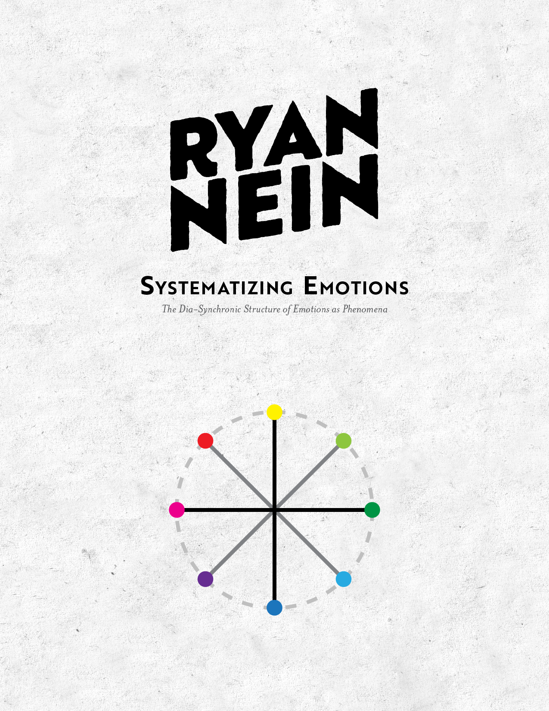
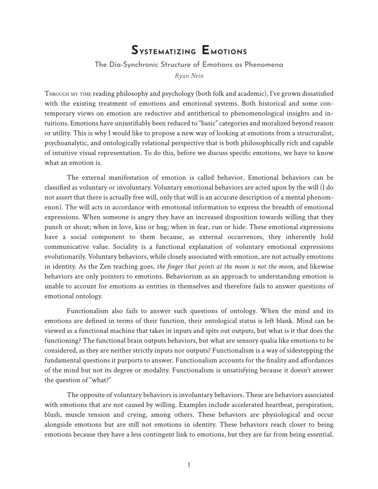
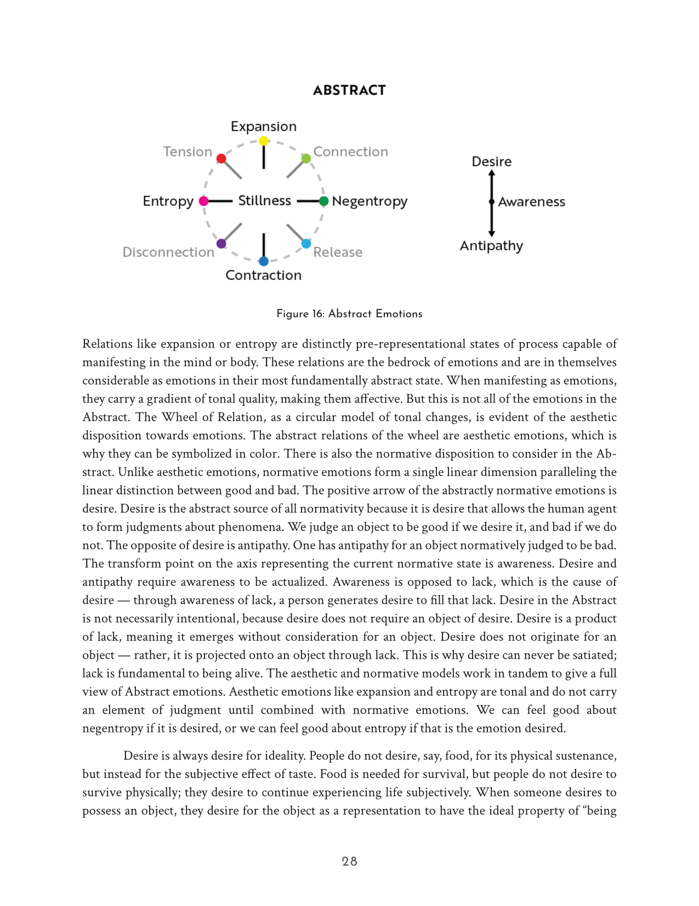
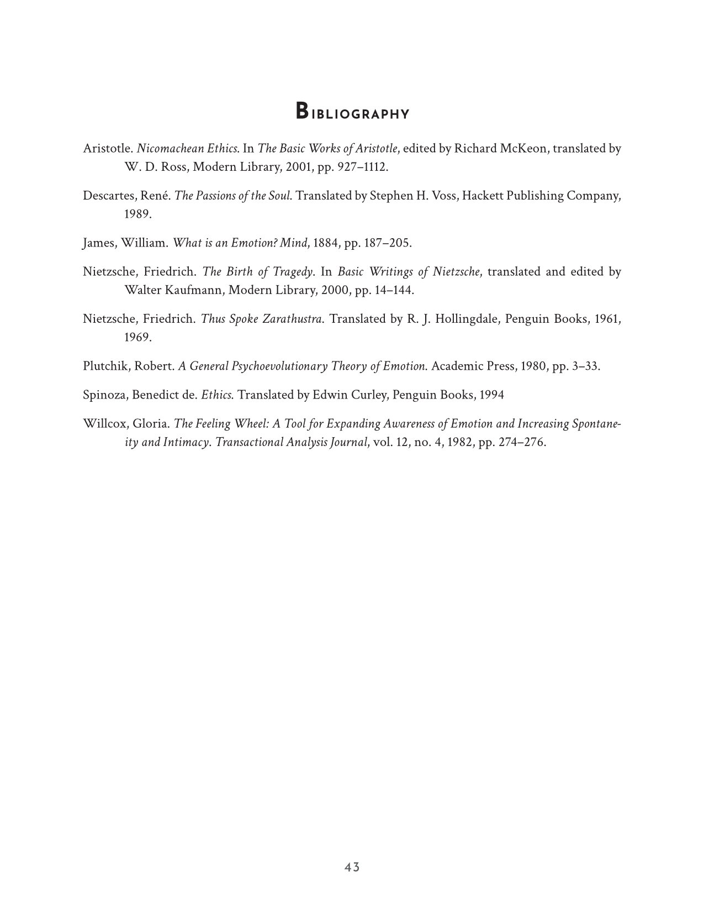

Systematizing Emotions
This video develops a comprehensive ontology of emotion by treating emotions not as behaviors or evolutionary functions, but as ideal phenomena: modes of consciousness with their own internal structure. Instead of explaining emotions through physiology or external stimuli, the system reframes them as monadic relations: the mind relating to its own internal representations rather than reacting to outside objects. This shift allows emotions to be analyzed philosophically, categorically, and structurally.
Summary
The framework begins with a categorical analysis of how emotions operate within consciousness. Using categories such as transform, definition, material, efficiency, degree, modality, affordance, and finality, the system maps the internal mechanics of emotional experience. These categories reveal that emotions are not arbitrary feelings but structured modes of relation, each with its own logic and directionality.
A central contribution of the video is the Wheel of Relation, a radial model that organizes emotions along two primary axes: motion (expansion vs. contraction) and order (entropy vs. negentropy). This creates a dynamic map of emotional states, showing how feelings like joy, tension, melancholy, or pride emerge from shifts in psychological motion and structural organization.
The system is further developed through a set of registers — Abstract, Formal, Iconic, and Symbolic — which correspond to levels of consciousness and interpretation. These registers parallel Freudian structures (id, ego, superego) and help explain how emotions arise from different layers of mental processing. Lower registers capture raw, pre‑conceptual affect, while higher registers encode emotions into recognizable forms, narratives, and symbolic meanings.
Philosophically, the video challenges normative assumptions about emotional life. Drawing on Nietzsche, it critiques the cultural fixation on happiness and moderation, arguing that emotional richness — including sadness, fear, tension, and melancholy — is essential to perception and meaning. Emotions are treated as aesthetic phenomena that shape how we encounter the world, not as problems to be corrected.
The framework is applied to concepts such as love, depression, and the classical rhetorical appeals (ethos, logos, pathos) to show how emotional intelligence can be deepened by understanding the structural relations behind each feeling. By mapping emotions as relational modes rather than isolated states, the system offers a way to understand the full spectrum of human affect with clarity, nuance, and philosophical depth.
PDF Preview
This essay is available as a downloadable PDF here.



